Restore - Computer, Mobile & Digital Repair Shop HTML5 Template
If you like this template please spare a minute to rate it. If you want any support, Please feel free to contact me via my profile page http://themeforest.net/user/codeecstasy
This template built with LESS. Inside the directory css/less you will find all less files where variables.less declares all colors and variables and layout.less mainly contain all necessary declaration for css. style.less should be compiled to css/style.css. Other two less files mixins.less and reset.less are for common CSS behaviour.
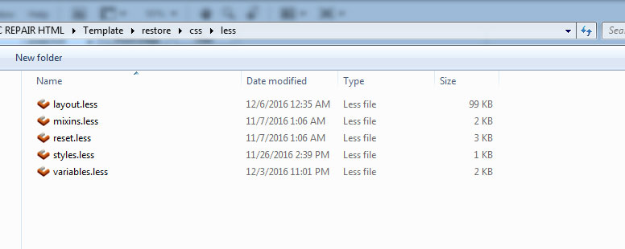
All the directories and files are well organized as it shown on the image bellow. Same file tree has been applicable for all HTML files
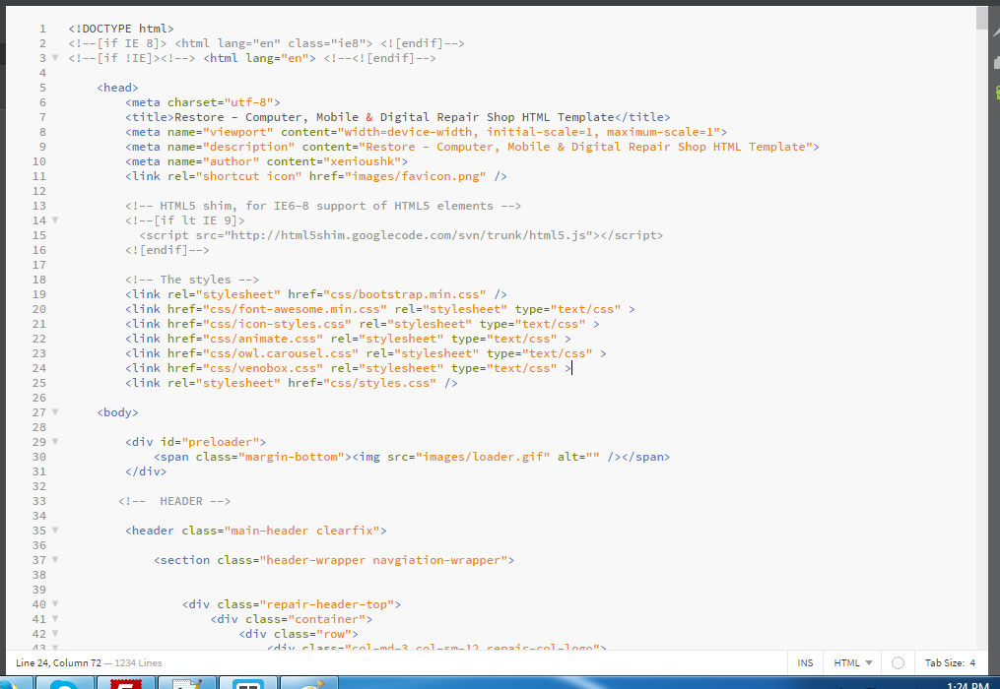
This template is a mobile friendly (responsive) layout which is designed based on Twitter Bootstrap v3.*. See our HTML file structure which is in index.html. Your contents go inside container.
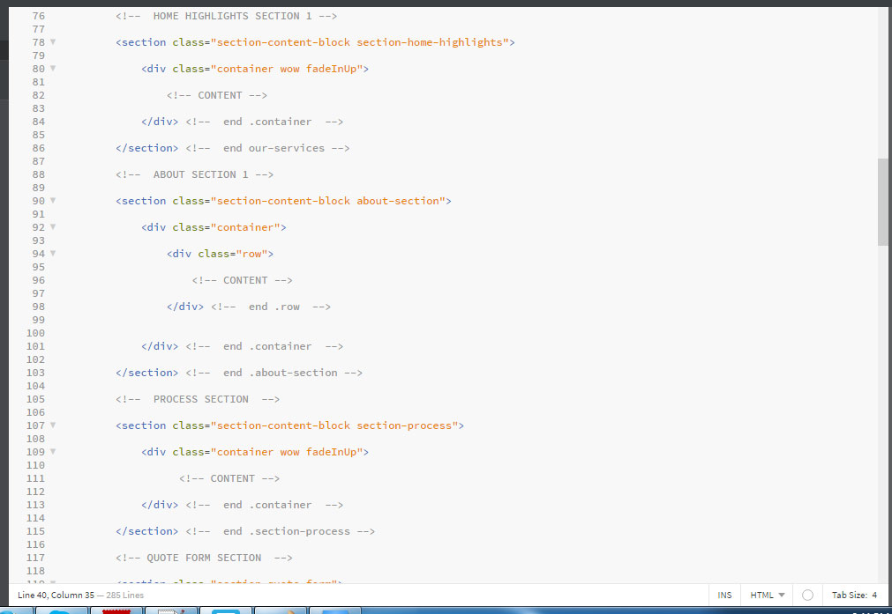
We are using 7 CSS files in this template and we separated styles for improving convenience to edit this template. If you're going to use this template in production we recommend you to merge all stylesheets into one file (for decreasing HTTP queries).
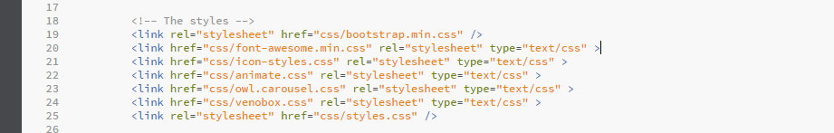
There are 11 jQuery files including necessary plugins, all of them be found in jsfolder of home directory. custom-scripts.js This file must go all the way down to other files and plugins for app landing page. This file contains custom codes
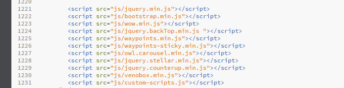
Top Navigation Bar Screenshot
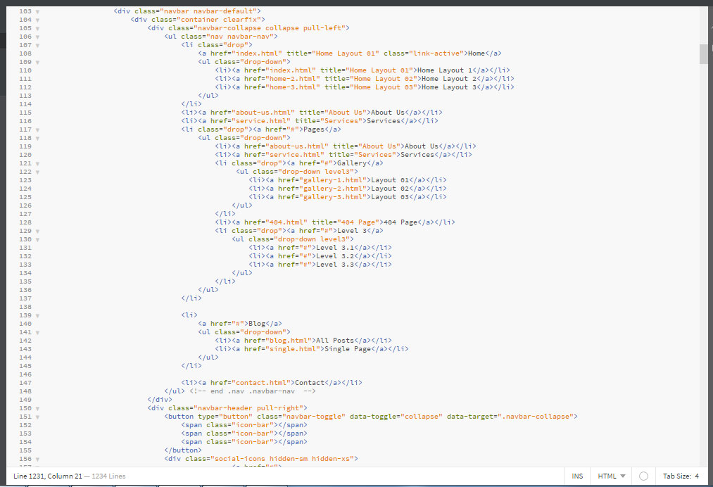
Footer Navigation Bar Screenshot
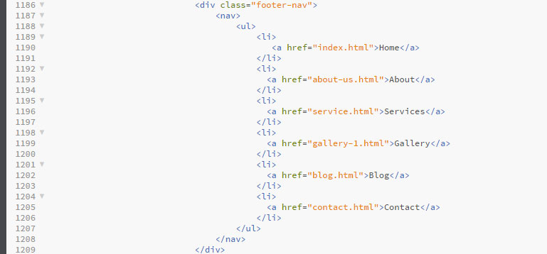
Hedaer Logo Screenshot
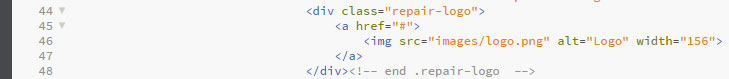
Footer Logo Screenshot
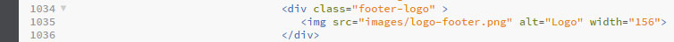
We have used google font Poppins. Font used in the top of the file less/variables.lss
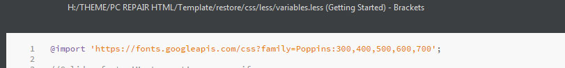
We used WOW plugin to trigger animations on scroll. Here are some animation classes we used in this Template. To learn more about WOW please read their Documentation
1. fadeIn
2. fadeInLeft
3. fadeInRight
4. fadeInUp
5. fadeInDown
6. fadeInLeftBig
7. fadeInRightBig
8. fadeInUpBig
9. fadeInDownBig
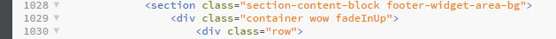
We used several background images in our template. You'll find the code in the file css/less/layout.less. Thess code will be available after the compilation of the layout.less and written in the css/layout.css in the. Examples are given in the screenshot
In the layout.less
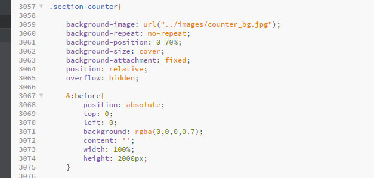
In the index.html
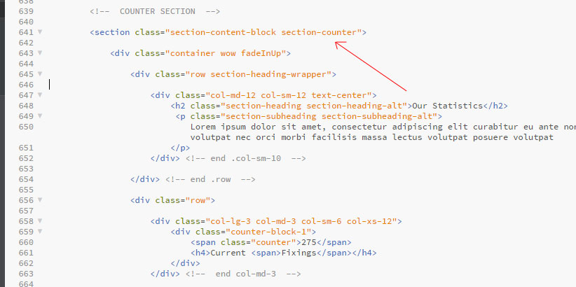
For contact page Google Map, open the file js/custom-scripts.js and look for the line 304/305 and change the lat, lng value according to your map location
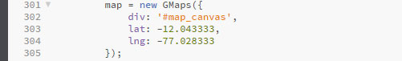
= v1.0 = 06.12.2016
* Initial Release